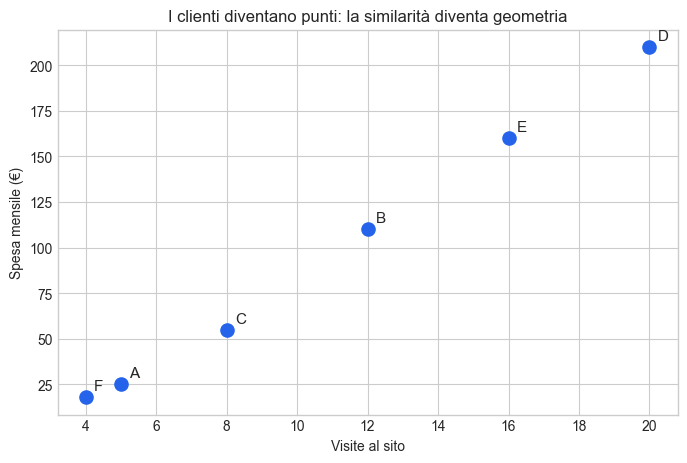
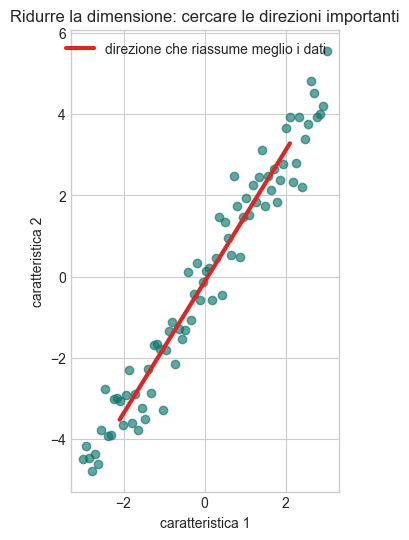
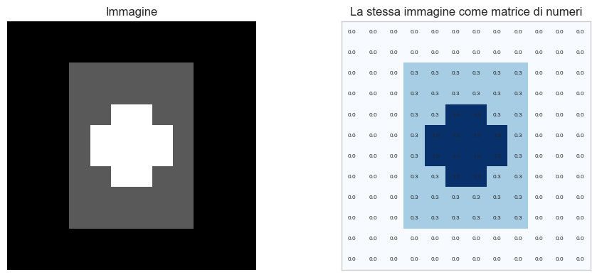
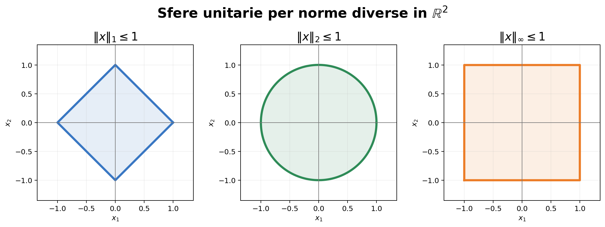
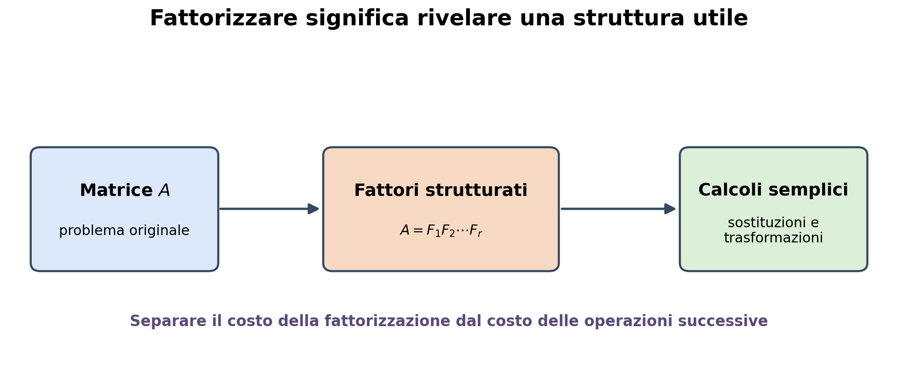
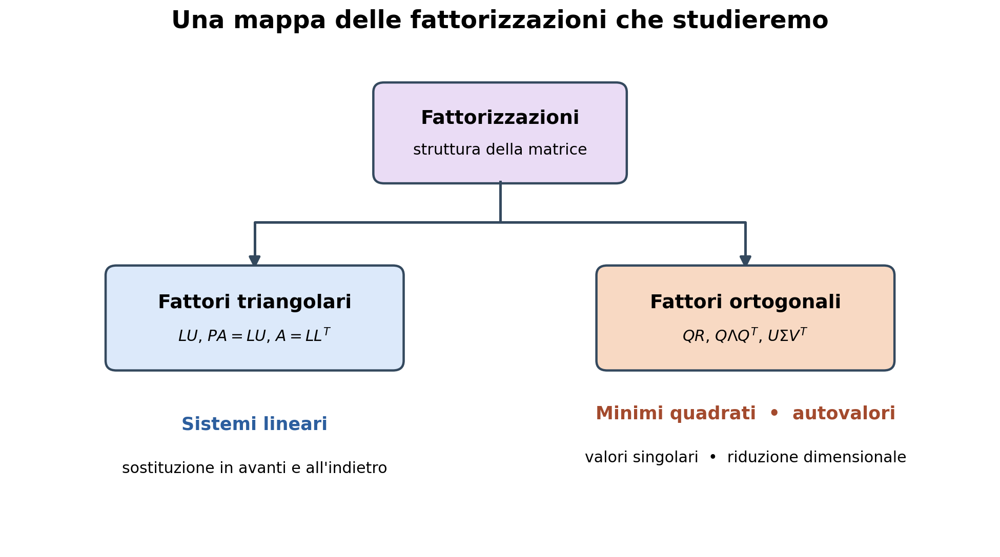
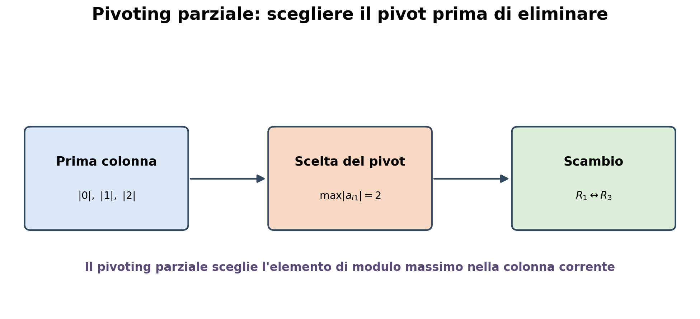

Perché l’algebra lineare è fondamentale nell’analisi dei dati?#
Partiamo da un problema concreto#
Un’azienda raccoglie alcune informazioni sui propri clienti:
numero di visite al sito nell’ultimo mese;
tempo medio trascorso sul sito;
spesa mensile;
numero di acquisti.
Ogni cliente è descritto da più numeri. Possiamo organizzare questi dati in una tabella.
import numpy as np
import pandas as pd
import matplotlib.pyplot as plt
plt.style.use("seaborn-v0_8-whitegrid")
clienti = pd.DataFrame({
"visite": [5, 12, 8, 20, 16, 4],
"tempo_medio_min": [2.1, 5.4, 3.2, 8.1, 6.7, 1.8],
"spesa_euro": [25, 110, 55, 210, 160, 18],
"acquisti": [1, 4, 2, 7, 5, 1]
}, index=["Cliente A", "Cliente B", "Cliente C", "Cliente D", "Cliente E", "Cliente F"])
clienti
| visite | tempo_medio_min | spesa_euro | acquisti | |
|---|---|---|---|---|
| Cliente A | 5 | 2.1 | 25 | 1 |
| Cliente B | 12 | 5.4 | 110 | 4 |
| Cliente C | 8 | 3.2 | 55 | 2 |
| Cliente D | 20 | 8.1 | 210 | 7 |
| Cliente E | 16 | 6.7 | 160 | 5 |
| Cliente F | 4 | 1.8 | 18 | 1 |
Un dataset è una matrice
La tabella precedente può essere vista come una matrice \(X\):
ogni riga rappresenta un cliente;
ogni colonna rappresenta una caratteristica;
ogni cliente è quindi anche un vettore di numeri.
Questa semplice osservazione è già una prima risposta:
Per analizzare un dataset dobbiamo saper lavorare con vettori e matrici.
La stessa rappresentazione si usa per dati economici, questionari, sensori, testi, immagini e moltissimi altri tipi di informazione.
X = clienti.to_numpy()
print("Dimensione della matrice:", X.shape)
print("Numero di clienti:", X.shape[0])
print("Numero di caratteristiche per cliente:", X.shape[1])
Dimensione della matrice: (6, 4)
Numero di clienti: 6
Numero di caratteristiche per cliente: 4
L’algebra lineare permette di confrontare gli oggetti#
Molte domande dell’analisi dei dati hanno una natura geometrica:
quali clienti hanno comportamenti simili?
quali prodotti vengono acquistati insieme?
quali documenti trattano argomenti vicini?
quali osservazioni sono anomale?
Se ogni cliente è un vettore, la distanza tra vettori misura quanto due clienti sono diversi. Il prodotto scalare e l’angolo tra vettori permettono invece di misurare la loro similarità.
Nel grafico seguente consideriamo solo due caratteristiche per poter visualizzare i clienti come punti nel piano.
fig, ax = plt.subplots(figsize=(8, 5))
ax.scatter(clienti["visite"], clienti["spesa_euro"], s=90, color="#2563eb")
for nome, riga in clienti.iterrows():
ax.annotate(nome[-1], (riga["visite"], riga["spesa_euro"]),
xytext=(6, 5), textcoords="offset points", fontsize=11)
ax.set_xlabel("Visite al sito")
ax.set_ylabel("Spesa mensile (€)")
ax.set_title("I clienti diventano punti: la similarità diventa geometria")
plt.show()

Nel grafico si vede, per esempio, che i clienti D ed E sono relativamente vicini, mentre D ed F sono molto lontani.
L’algebra lineare trasforma quindi un’idea qualitativa — questi clienti si assomigliano — in una quantità che un algoritmo può calcolare.
Questa idea è alla base di:
segmentazione della clientela;
sistemi di raccomandazione;
ricerca di contenuti simili;
algoritmi di clustering e classificazione.
I modelli diventano operazioni tra matrici e vettori#
Supponiamo di voler prevedere la spesa di un cliente usando alcune sue caratteristiche. Un modello lineare assegna un peso a ogni caratteristica:
Per un solo cliente è una somma pesata. Per tutti i clienti contemporaneamente diventa un prodotto matrice-vettore:
Con una sola operazione possiamo quindi produrre migliaia o milioni di previsioni.
# Un semplice modello dimostrativo: i coefficienti sono fissati solo per mostrare
# come un prodotto matrice-vettore produca tutte le previsioni insieme.
caratteristiche = clienti[["visite", "tempo_medio_min", "acquisti"]].to_numpy()
X_modello = np.column_stack([np.ones(len(clienti)), caratteristiche])
pesi = np.array([2.0, 1.2, 3.0, 22.0])
spesa_prevista = X_modello @ pesi
pd.DataFrame({
"spesa_reale": clienti["spesa_euro"],
"spesa_prevista": np.round(spesa_prevista, 1)
})
| spesa_reale | spesa_prevista | |
|---|---|---|
| Cliente A | 25 | 36.3 |
| Cliente B | 110 | 120.6 |
| Cliente C | 55 | 65.2 |
| Cliente D | 210 | 204.3 |
| Cliente E | 160 | 151.3 |
| Cliente F | 18 | 34.2 |
Non è importante, per ora, sapere come scegliere i pesi migliori: ciò che conta è osservare che il modello è espresso nel linguaggio dell’algebra lineare.
La regressione lineare conduce poi a un problema di minimi quadrati. Anche modelli molto più complessi, comprese le reti neurali, eseguono continuamente prodotti tra matrici e vettori.
Ridurre la complessità significa trovare nuove direzioni#
I dataset reali possono avere centinaia o migliaia di caratteristiche. Alcune sono ridondanti, altre contengono poco segnale.
La riduzione dimensionale cerca poche nuove variabili che conservino la parte più importante dell’informazione. La PCA, per esempio, individua direzioni lungo le quali i dati variano maggiormente e proietta i dati su queste direzioni.
Geometricamente, significa sostituire molte coordinate con poche coordinate più informative.
rng = np.random.default_rng(7)
x = np.linspace(-3, 3, 80)
y = 1.5 * x + rng.normal(0, 0.7, size=x.size)
dati = np.column_stack([x, y])
# Prima direzione principale, calcolata qui solo per visualizzarne il significato.
dati_centrati = dati - dati.mean(axis=0)
_, _, Vt = np.linalg.svd(dati_centrati, full_matrices=False)
direzione = Vt[0]
t = np.array([-4, 4])
retta = dati.mean(axis=0) + np.outer(t, direzione)
fig, ax = plt.subplots(figsize=(7, 6))
ax.scatter(dati[:, 0], dati[:, 1], alpha=0.65, color="#0f766e")
ax.plot(retta[:, 0], retta[:, 1], color="#dc2626", linewidth=3,
label="direzione che riassume meglio i dati")
ax.set_xlabel("caratteristica 1")
ax.set_ylabel("caratteristica 2")
ax.set_title("Ridurre la dimensione: cercare le direzioni importanti")
ax.legend()
ax.set_aspect("equal", adjustable="box")
plt.show()

I punti del grafico hanno due coordinate, ma sono distribuiti soprattutto lungo una direzione. Proiettandoli sulla linea rossa possiamo descriverli quasi completamente con un solo numero.
Autovalori, autovettori e decomposizione ai valori singolari (SVD) non sono quindi calcoli fini a sé stessi: aiutano a
visualizzare dati con molte variabili;
comprimere l’informazione;
eliminare rumore e ridondanza;
rendere più veloci gli algoritmi successivi.
Anche immagini e testi diventano vettori e matrici#
Un’immagine in scala di grigi è una matrice: ogni elemento contiene l’intensità di un pixel. Un’immagine a colori può essere rappresentata mediante tre matrici, una per ciascun canale RGB.
Per questo motivo, elaborare un’immagine significa spesso eseguire operazioni su matrici.
# Una piccola immagine artificiale 12 x 12.
immagine = np.zeros((12, 12))
immagine[2:10, 3:9] = 0.35
immagine[4:8, 5:7] = 1.0
immagine[5:7, 4:8] = 1.0
fig, axes = plt.subplots(1, 2, figsize=(10, 4))
axes[0].imshow(immagine, cmap="gray", vmin=0, vmax=1)
axes[0].set_title("Immagine")
axes[0].axis("off")
axes[1].imshow(immagine, cmap="Blues", vmin=0, vmax=1)
axes[1].set_title("La stessa immagine come matrice di numeri")
for i in range(immagine.shape[0]):
for j in range(immagine.shape[1]):
axes[1].text(j, i, f"{immagine[i, j]:.1f}", ha="center", va="center", fontsize=6)
axes[1].set_xticks([])
axes[1].set_yticks([])
plt.tight_layout()
plt.show()

Anche oggetti non immediatamente numerici vengono trasformati in vettori:
un testo può essere rappresentato da un vettore di frequenze o da un embedding;
un utente da un vettore di preferenze;
un prodotto da un vettore di caratteristiche;
una serie temporale da una sequenza di vettori.
Una volta ottenuta questa rappresentazione, possiamo applicare gli stessi strumenti matematici a dati molto diversi.
Perché gli strumenti devono anche essere numericamente affidabili?#
In teoria possiamo scrivere una formula corretta; in pratica il computer lavora con precisione finita e dataset molto grandi. Alcuni problemi amplificano piccoli errori o piccole perturbazioni nei dati.
Studiare l’algebra lineare in un corso di metodi numerici serve anche a capire:
quale algoritmo usare;
quanto costa in tempo e memoria;
se il risultato è sensibile agli errori nei dati;
quando una soluzione calcolata è davvero affidabile.
Non basta quindi sapere che una soluzione esiste: bisogna saperla calcolare in modo efficiente e stabile.
Una mappa delle idee#
Domanda sui dati |
Idea di algebra lineare |
|---|---|
Come rappresento molte osservazioni e caratteristiche? |
Vettori e matrici |
Quali oggetti si assomigliano? |
Distanze, norme, prodotto scalare |
Come trasformo simultaneamente tutti i dati? |
Prodotto matrice-vettore |
Come costruisco una previsione? |
Sistemi lineari e minimi quadrati |
Ci sono caratteristiche ridondanti? |
Rango e dipendenza lineare |
Come riassumo dati ad alta dimensione? |
Autovettori, SVD e PCA |
Come elaboro immagini, testi e segnali? |
Operazioni tra vettori e matrici |
Posso fidarmi del risultato numerico? |
Condizionamento e stabilità |
L’algebra lineare è importante nell’analisi dei dati perché consente di:
rappresentare i dati in una forma utilizzabile dal computer;
interpretare geometricamente relazioni, distanze e similarità;
costruire modelli e calcolare molte previsioni contemporaneamente;
ridurre e comprimere grandi quantità di informazione;
progettare algoritmi efficienti e numericamente affidabili.
Studiare l’algebra lineare non significa soltanto imparare a fare calcoli con le matrici. Significa imparare il linguaggio che permette di trasformare i dati in informazione.
Strumenti per l’algebra lineare: norme#
Norme vettoriali e matriciali
Una norma associa a ogni vettore un numero non negativo che ne misura la grandezza. Una funzione:
è una norma se, per ogni \(\mathbf{x},\mathbf{y}\in\mathbb{R}^n\) e \(\alpha\in\mathbb{R}\), soddisfa:
\(\|\mathbf{x}\|\geq0\);
\(\|\mathbf{x}\|=0\) se e solo se \(\mathbf{x}=\mathbf{0}\);
\(\|\alpha\mathbf{x}\|=|\alpha|\,\|\mathbf{x}\|\);
\(\|\mathbf{x}+\mathbf{y}\|\leq\|\mathbf{x}\|+\|\mathbf{y}\|\).
La quantità \(\|\mathbf{x}-\mathbf{y}\|\) definisce una distanza tra due vettori.
Norme \(p\)
Per \(1\leq p<\infty\), la norma \(p\) di un vettore \(\mathbf{x}=(x_1,\ldots,x_n)^T\) è
I casi più utilizzati sono:
esempio
Per il vettore
si ha
import numpy as np
x = np.array([1., -2., 2.])
print('Norma 1 =', np.linalg.norm(x, 1))
print('Norma 2 =', np.linalg.norm(x, 2))
print('Norma infinito=', np.linalg.norm(x, np.inf))
Norma 1 = 5.0
Norma 2 = 3.0
Norma infinito= 2.0
Sfere unitarie
La sfera unitaria associata a una norma è l’insieme dei vettori che soddisfano \(\|\mathbf{x}\|\leq1\). Norme differenti attribuiscono quindi forme geometriche differenti al concetto di grandezza.

In uno spazio di dimensione finita tutte le norme sono equivalenti: possono produrre valori diversi, ma definiscono lo stesso concetto di convergenza.
Norme matriciali
Una norma matriciale associa a ogni matrice \(A\) un numero \(\|A\|\) e soddisfa proprietà analoghe a quelle di una norma vettoriale. Per essere compatibile con il prodotto tra matrici si richiede inoltre
Questa proprietà è detta submoltiplicatività ed è fondamentale per studiare la propagazione degli errori negli algoritmi numerici.
Norme matriciali indotte
Fissata una norma vettoriale, la norma matriciale indotta è definita da
Essa misura il massimo fattore con cui la trasformazione \(A\) può amplificare la norma di un vettore. Per definizione è consistente con la norma vettoriale:
Norme matriciali \(1\), \(\infty\) e \(2\)
Per \(A=(a_{ij})\in\mathbb{R}^{m\times n}\):
cioè la massima somma dei moduli degli elementi di una colonna;
cioè la massima somma dei moduli degli elementi di una riga;
dove \(\sigma_{\max}(A)\) è il massimo valore singolare e \(\rho\) indica il raggio spettrale.
Norma di Frobenius
La norma di Frobenius considera la matrice come un vettore formato da tutti i suoi elementi:
Equivalentemente,
La norma di Frobenius è submoltiplicativa e consistente con la norma euclidea, ma non è la norma matriciale indotta dalla norma \(2\).
A = np.array([[1., -2.],
[3., 4.]])
print('Norma matriciale 1 =', np.linalg.norm(A, 1))
print('Norma matriciale infinito =', np.linalg.norm(A, np.inf))
print('Norma matriciale 2 =', np.linalg.norm(A, 2))
print('Norma di Frobenius =', np.linalg.norm(A, 'fro'))
# Verifica della disuguaglianza ||Ax|| <= ||A|| ||x|| per la norma 2
x = np.array([1., -1.])
sinistra = np.linalg.norm(A @ x, 2)
destra = np.linalg.norm(A, 2) * np.linalg.norm(x, 2)
print('\n||Ax||_2 =', sinistra)
print('||A||_2 ||x||_2 =', destra)
print('Disuguaglianza verificata?', sinistra <= destra + 1e-14)
Norma matriciale 1 = 6.0
Norma matriciale infinito = 7.0
Norma matriciale 2 = 5.116672736016927
Norma di Frobenius = 5.477225575051661
||Ax||_2 = 3.1622776601683795
||A||_2 ||x||_2 = 7.23606797749979
Disuguaglianza verificata? True
In sintesi#
Le norme vettoriali misurano la grandezza dei vettori e definiscono una distanza.
Le norme \(1\), \(2\) e \(\infty\) enfatizzano aspetti differenti del vettore.
Una norma matriciale indotta misura la massima amplificazione prodotta dalla matrice.
\(\|A\|_1\) è la massima somma per colonna.
\(\|A\|_\infty\) è la massima somma per riga.
\(\|A\|_2\) è il massimo valore singolare (vedremo cosa sono più avanti)
La norma di Frobenius è la norma euclidea applicata a tutti gli elementi della matrice.
Operazioni sulle matrici: fattorizzazione di matrici#
Molti problemi numerici diventano più semplici se, invece di lavorare direttamente con la matrice originale, la esprimiamo come prodotto di matrici dotate di una struttura particolare. Questa operazione prende il nome di fattorizzazione o decomposizione matriciale.
In forma generale, cerchiamo
dove i fattori \(F_1,\ldots,F_r\) sono più facili da utilizzare oppure mettono in evidenza proprietà importanti di \(A\).
L’idea fondamentale#
Fattorizzare una matrice non significa soltanto riscriverla in una forma diversa. La fattorizzazione trasforma un problema complesso in una successione di problemi più semplici.

La scelta dei fattori non è unica: dipende dal problema da risolvere e dalle proprietà della matrice.
Perché fattorizzare una matrice?#
Le fattorizzazioni vengono utilizzate per:
risolvere sistemi lineari;
risolvere problemi ai minimi quadrati;
calcolare autovalori e autovettori;
calcolare valori e vettori singolari;
determinare rango e condizionamento;
comprimere e approssimare dati;
separare direzioni significative da rumore o ridondanza.
Una buona fattorizzazione può offrire contemporaneamente:
efficienza, perché riduce il costo delle operazioni successive;
stabilità numerica, perché limita la propagazione degli errori di arrotondamento;
interpretabilità, perché rende visibili proprietà nascoste della matrice.
Una prima classificazione#
Nel seguito considereremo due grandi famiglie di fattorizzazioni.


Le fattorizzazioni triangolari sono particolarmente adatte alla soluzione di sistemi lineari. Le fattorizzazioni basate su matrici ortogonali sono fondamentali per minimi quadrati, autovalori, valori singolari e analisi dei dati.
Fattorizzazione LU#
L’obiettivo è rappresentare la matrice \(A\) come
dove:
\(L\) è triangolare inferiore, generalmente con elementi diagonali uguali a \(1\);
\(U\) è triangolare superiore.
Infatti, il sistema \(A\mathbf{x}=\mathbf{b}\) diventa
Ponendo \(\mathbf{y}=U\mathbf{x}\), risolviamo in successione
L’eliminazione di Gauss trasforma \(A\) in una matrice triangolare superiore \(U\) eliminando, colonna dopo colonna, gli elementi al di sotto della diagonale.
Al passo \(k\), per eliminare l’elemento \(a_{ik}\) con \(i>k\), si utilizza il moltiplicatore
e si esegue l’operazione di riga
I moltiplicatori dell’eliminazione vengono memorizzati nella parte triangolare inferiore di \(L\). La matrice finale dell’eliminazione è \(U\).
Per una matrice densa \(n\times n\), la costruzione dei fattori richiede circa
operazioni in virgola mobile, mentre la soluzione dei due sistemi triangolari costa circa \(2n^2\) operazioni.
Esempio completo su una matrice \(3\times3\)#
Consideriamo
Il primo pivot è \(a_{11}=2\). I moltiplicatori della prima colonna sono
Eseguiamo
ottenendo
Il secondo moltiplicatore è
Eseguiamo quindi
e otteniamo la matrice triangolare superiore
Inserendo i moltiplicatori sotto la diagonale unitaria costruiamo
Si verifica direttamente che
Pivoting#
Nell’eliminazione di Gauss il numero utilizzato come divisore al passo \(k\) è il pivot \(u_{kk}\). Per eliminare gli elementi sotto il pivot calcoliamo
Possono verificarsi due problemi:
Pivot nullo. La divisione non è definita, anche se la matrice può essere non singolare.
Pivot molto piccolo. I moltiplicatori possono diventare molto grandi e amplificare gli errori di arrotondamento.
Il pivoting consiste nel riordinare opportunamente le equazioni prima di eseguire l’eliminazione.
Un pivot nullo non implica che la matrice sia singolare#
Consideriamo
Il primo pivot è nullo, quindi l’eliminazione senza scambi di riga non può iniziare. Tuttavia,
e la matrice è perfettamente invertibile. Basta scambiare le due righe:
Dopo lo scambio, il primo pivot è diverso da zero.
Perché anche un pivot piccolo è pericoloso?
In aritmetica esatta è sufficiente che il pivot sia diverso da zero. In aritmetica finita, però, un pivot molto piccolo può produrre moltiplicatori enormi.
Per esempio, consideriamo
Senza scambiare le righe, il primo moltiplicatore è
che può essere molto grande. Le operazioni coinvolgono allora numeri di grandezza molto diversa e possono causare cancellazione e perdita di cifre significative.
Scambiando le righe, il pivot diventa \(1\) e il moltiplicatore diventa \(\varepsilon\).
Pivoting parziale
Al passo \(k\) del pivoting parziale cerchiamo, nella colonna corrente, l’elemento di modulo massimo tra le righe non ancora utilizzate:
Se \(p\neq k\), scambiamo le righe \(k\) e \(p\). Solo dopo lo scambio procediamo con l’eliminazione.
{kind=link}


La scelta del massimo garantisce che, nella colonna corrente,
Il pivoting parziale è la strategia usata normalmente per matrici dense generali.
import numpy as np
from scipy.linalg import lu
A = np.array([
[ 2., 1., 1.],
[ 4., -6., 0.],
[-2., 7., 2.]
])
P, L, U = lu(A)
print("P =\n", P)
print("L =\n", L)
print("U =\n", U)
print(np.allclose(A, P @ L @ U))
P =
[[0. 1. 0.]
[1. 0. 0.]
[0. 0. 1.]]
L =
[[ 1. 0. 0. ]
[ 0.5 1. 0. ]
[-0.5 1. 1. ]]
U =
[[ 4. -6. 0.]
[ 0. 4. 1.]
[ 0. 0. 1.]]
True
Fattorizzazione di Cholesky#
La fattorizzazione di Cholesky è una variante particolarmente efficiente della fattorizzazione \(LU\). Si applica alle matrici reali simmetriche e definite positive.
Una matrice \(A\in\mathbb{R}^{n\times n}\) è definita positiva se
In tal caso esiste un’unica matrice triangolare inferiore \(L\), con elementi diagonali positivi, tale che
Un esempio \(3\times3\)#
Consideriamo la matrice simmetrica definita positiva
La sua fattorizzazione di Cholesky è
Infatti
import numpy as np
A = np.array([[4., 2., 2.],
[2., 5., 1.],
[2., 1., 5.]])
L = np.linalg.cholesky(A)
print('L =\n', L)
print('\nErrore ||A - LL^T||_2 =', np.linalg.norm(A - L @ L.T))
L =
[[2. 0. 0.]
[1. 2. 0.]
[1. 0. 2.]]
Errore ||A - LL^T||_2 = 0.0
Decomposizione agli autovalori: teoria e NumPy#
Questo notebook introduce la teoria essenziale e applica la decomposizione alla matrice dell’esempio.
Autovalori e autovettori
Dato un operatore lineare rappresentato da una matrice quadrata \(A\in\mathbb{R}^{n\times n}\), un numero \(\lambda\) è un autovalore se esiste un vettore non nullo \(v\) tale che
Il vettore \(v\) è l’autovettore associato a \(\lambda\). La trasformazione \(A\) non cambia la direzione di \(v\): lo moltiplica soltanto per il fattore \(\lambda\).
Riscrivendo l’equazione come \((A-\lambda I)v=0\), esiste una soluzione non nulla soltanto se \(A-\lambda I\) è singolare. Pertanto gli autovalori sono le radici del polinomio caratteristico
Per ogni autovalore, gli autovettori si ottengono risolvendo \((A-\lambda I)v=0\).
Diagonalizzazione
Se \(A\) possiede \(n\) autovettori linearmente indipendenti, è diagonalizzabile. Ponendo
si ha \(AV=V\Lambda\) e quindi
Una matrice con autovalori tutti distinti è diagonalizzabile. La diagonalizzabilità può comunque verificarsi anche con autovalori ripetuti, purché esistano abbastanza autovettori indipendenti.
import numpy as np
A = np.array([[ 2., 1., 1.],
[ 4., -6., 0.],
[-2., 7., 2.]])
A
array([[ 2., 1., 1.],
[ 4., -6., 0.],
[-2., 7., 2.]])
Per questa matrice il polinomio caratteristico è \(p_A(\lambda)=\lambda^3+2\lambda^2-22\lambda+16\). NumPy può calcolarne i coefficienti e le radici numeriche:
coefficienti = np.poly(A)
print("Coefficienti del polinomio caratteristico:", coefficienti)
print("Radici:", np.roots(coefficienti))
Coefficienti del polinomio caratteristico: [ 1. 2. -22. 16.]
Radici: [-6.06347233 3.25206391 0.81140842]
Calcolo numerico con NumPy
np.linalg.eig(A) restituisce gli autovalori e una matrice V le cui colonne sono gli autovettori corrispondenti. L’ordine degli autovalori non è prestabilito; anche il segno o la fase di un autovettore possono cambiare senza modificarne il significato.
autovalori, V = np.linalg.eig(A)
Lambda = np.diag(autovalori)
print("Autovalori:\n", autovalori)
print("\nAutovettori (in colonna):\n", V)
Autovalori:
[-6.06347233 3.25206391 0.81140842]
Autovettori (in colonna):
[[-0.01195857 0.73345874 -0.47148436]
[ 0.75362427 0.3171006 -0.27687922]
[-0.65719666 0.60123663 0.83728155]]
A_ricostruita = V @ Lambda @ np.linalg.inv(V)
print("A ricostruita:\n", np.real_if_close(A_ricostruita))
print("\nVerifica A = V @ Lambda @ inv(V):",
np.allclose(A, A_ricostruita))
print("Verifica A @ V = V @ Lambda:",
np.allclose(A @ V, V @ Lambda))
A ricostruita:
[[ 2.00000000e+00 1.00000000e+00 1.00000000e+00]
[ 4.00000000e+00 -6.00000000e+00 4.58049147e-16]
[-2.00000000e+00 7.00000000e+00 2.00000000e+00]]
Verifica A = V @ Lambda @ inv(V): True
Verifica A @ V = V @ Lambda: True
Caso delle matrici simmetriche
Se \(A\) è reale e simmetrica, il teorema spettrale garantisce autovalori reali e una base ortonormale di autovettori. È preferibile usare np.linalg.eigh(A) e si ottiene \(A=V\Lambda V^T\), perché \(V^{-1}=V^T\). Per una matrice generale, invece, gli autovalori e gli autovettori possono essere complessi.